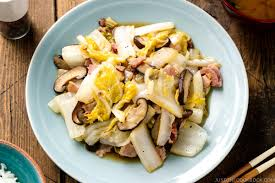

Simple Japanese Napa Cabbage Stir Fry

Description
A simple Japanese style napa cabbage stir fry suitable for all sorts of customisation
Ingredients for Serving Size of
1
100g
Napa cabbage1
Shiitake mushroom1 slice
Smoked bacon0.5 tsp
Extra-virgin olive oil0.06 tsp
Salt0.03 tsp
Ground black pepper1 tsp
Japanese soy sauce
Preparation
- Cut napa cabbage crosswise into 5 cm long pieces, cut tough thick pieces in half or thirds lengthwise
- Cut off stem from shiitake and then thinly slice the caps
- Cut the bacon into 1.3 cm wide strips
Cooking
- Heat pan on medium heat, once hot add bacon and stir fry
- Once bacon is cooked, add thick pieces of napa cabbageand sprinkle in half of prepared salt
- Stir to mix and then cover and cook on medium-low heat for 2 minutes
- Open lid and stir, add shiitake and tender, leafy pieces of naba cabbage. Sprinkle in the rest of the salt and stir
- Cover and cook for 3-4 minutes, check if tough cabbage pieces are cooked through
- If not stir and then cover for additional 1-2 minutes
- Season with 0.03 tsp freshly ground black pepper and 0.5 tsp soy sauce. Stir
- Transfer to a plate and serve
Back to Index